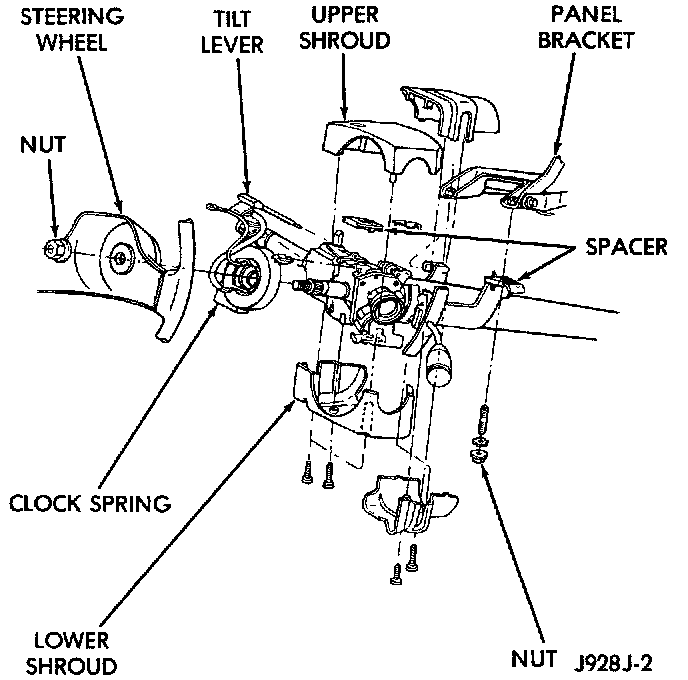
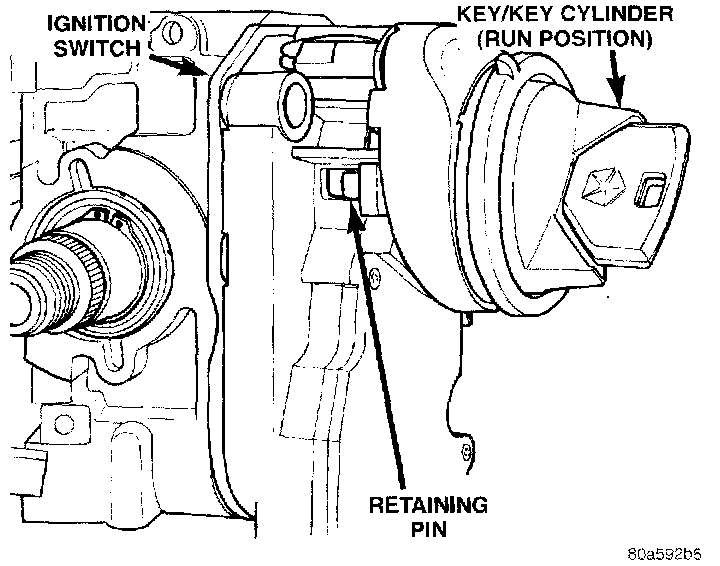
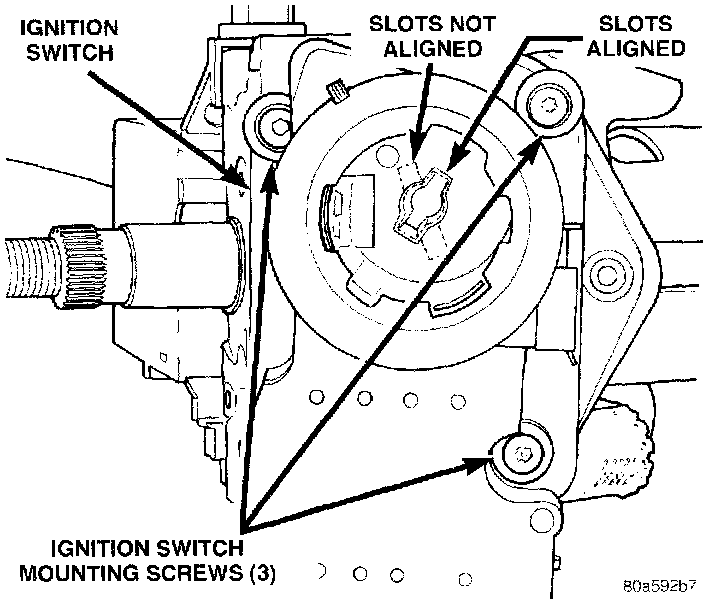
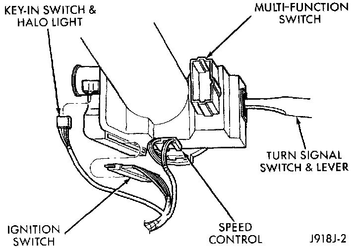
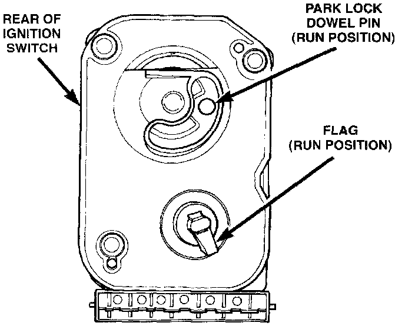
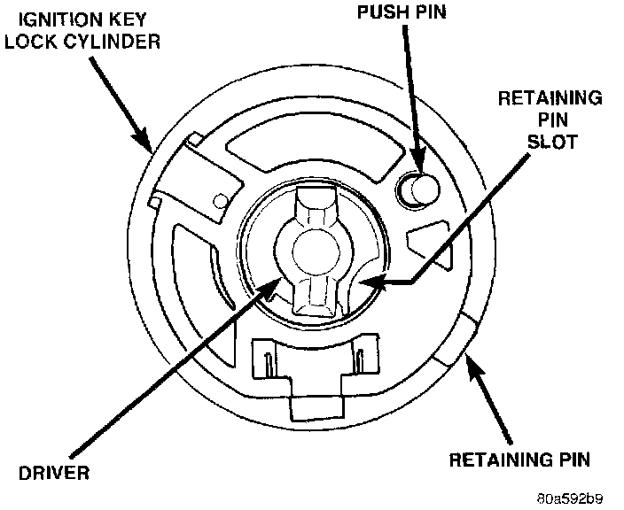
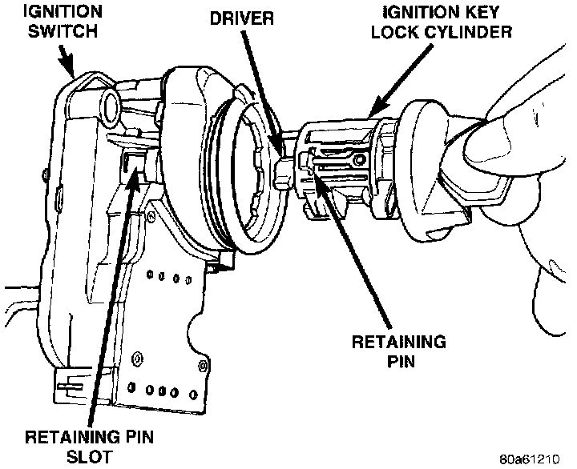
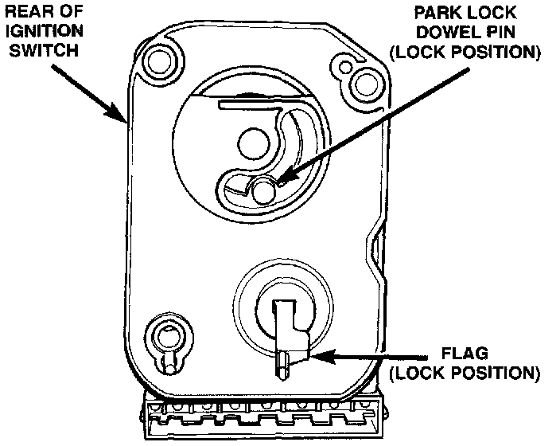
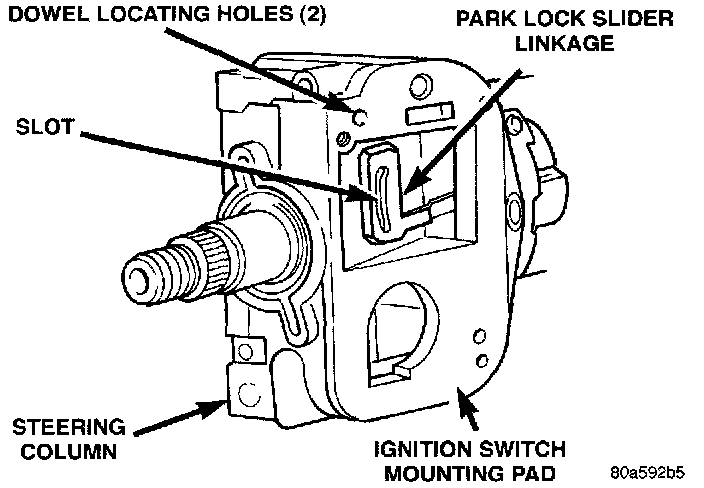
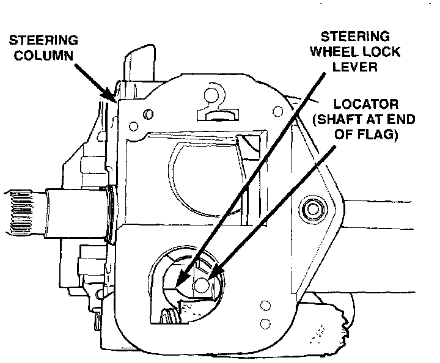

Ignition Switch: Service and Repair
NOTE: The ignition key must be in the key cylinder for cylinder removal.KEY CYLINDER REMOVAL
1. Disconnect negative cable from battery
2. If equipped with tilt column, remove tilt lever by turning it counterclockwise.
Fig. 43 Shroud R&R - Typical:

3. Remove upper and lower covers (shrouds) from steering column.
4. If equipped with automatic transmission, place shifter in PARK position.
Fig. 44 Retaining Pin:

5. A retaining pin is located at side of key cylinder assembly
a. Rotate key to RUN position.
b. Press in on retaining pin while pulling key cylinder from ignition switch.
IGNITION SWITCH REMOVAL
1. Remove key lock cylinder. Refer to previous steps.
Fig. 45 Switch Mounting Screws:

2. Remove 3 ignition switch mounting screws. Use tamper proof torx bit (Snap-On� SDMTR10 or equivalent) to remove screws.
Fig. 46 Ignition Switch & Halo Lamp Connectors:

3. Gently pull switch away from column. Release connector locks on 7-terminal wiring connector at ignition switch and remove connector.
4. Release connector lock on 4-terminal halo lamp wiring connector and remove connector.
IGNITION SWITCH AND KEY CYLINDER INSTALLATION
NOTE: If installing ignition key lock cylinder only, proceed to following steps 2, 3 and 4. Also refer to following steps 12 through 18. If installing both switch and key cylinder, refer to steps 1 through 18.
Fig. 47 Flag In Run Position:

Fig. 48 Key Cylinder - Rear View:

1. Rotate flag on rear of ignition switch until in RUN position. This step must be done to allow tang on key cylinder to fit into slots within ignition switch.
Fig. 49 Installing Key Cylinder Into Switch:

2. With key into ignition key cylinder, rotate key clockwise until retaining pin can be depressed.
3. Install key cylinder into ignition switch by aligning retaining pin into retaining pin slot. Push key cylinder into switch until retaining pin engages. After pin engages, rotate key to OFF or LOCK position.
4. Check for proper retention of key cylinder by attempting to pull cylinder from switch.
Fig. 50 Ignition Switch - View From Column:

Fig. 51 Park Lock Linkage - Automatic Trans. - Typical:

5. Automatic Transmission Only: Before attaching ignition switch to steering column, the transmission shifter must be in PARK position. The park lock dowel pin on rear of ignition switch must also be properly indexed into the park lock linkage before installing switch.
Fig. 52 Steering Wheel Lock Lever:

6. The flag at rear of ignition switch must be properly indexed into steering column before installing switch. This flag is used to operate the steering wheel lock lever in steering column. This lever allows steering wheel position to be locked when key switch is in LOCK position.
7. Place ignition switch in LOCK position. The switch is in the LOCK position when column lock flag is parallel to ignition switch terminals.
8. Automatic Transmission Only: Apply a light coating of grease to park lock dowel pin and park lock slider linkage. Before installing switch, push the park lock slider linkage forward until it bottoms. Do a final positioning by pulling it rearward about one-quarter inch.
9. Apply a light coating of grease to both column lock flag and shaft at end of flag.
10. Place ignition switch into openings on steering column.
a. Automatic Transmission Only: Be sure park lock dowel pin on rear of ignition switch enters slot in park lock slider linkage.
b. Be sure flag on rear of switch is positioned above steering wheel lock lever.
c. Align dowel pins on rear of switch into holes on side of steering column.
d. Install 3 ignition switch mounting screws. Tighten screws to 3 Nm +/- 0.5 Nm (26 in. lbs. +/- 4 in. lbs.) torque.
11. Connect electrical connectors to ignition switch and halo lamp. Make sure that switch locking tabs are fully seated in wiring connectors.
12. Install steering column covers (shrouds). Tighten screws to 2 Nm (17 in. lbs.) torque.
13. Install tilt column lever (if equipped).
14. Connect negative cable to battery
15. Check for proper operation of halo light.
16. Automatic Transmission Only: Shifter should lock in PARK position when key is in LOCK position (if equipped with shift lock device). Shifter should unlock when key rotated to ON position.
17. Check for proper operation of ignition switch in ACCESSORY, LOCK, OFF ON, RUN, and START positions.
18. Steering wheel should lock when key is in LOCK position. Rotate steering wheel to verify Steering wheel should unlock when key is rotated to ON position.
SHIFTER/IGNITION INTERLOCK
On models equipped with an automatic transmission, a cable connects the ignition switch with the floor shift lever. The shifter will be locked in the PARK position when the ignition key is in the LOCK or ACCESSORY positions. The cable can be adjusted or replaced. The ignition interlock device within the steering column is not serviceable. If service is necessary, the steering column must be replaced.